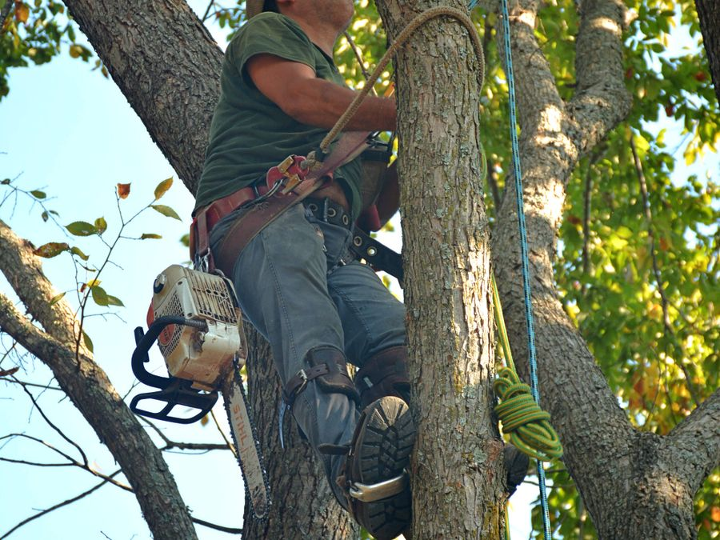

Large & Hazardous Tree Removal in Savannah, GA
Oversized trees near a house, leaning toward a structure, or growing into power lines need more than a chainsaw and hope – here's how we handle them safely.
When a tree is too big or too close to just cut down
Savannah's old live oaks and tall pines can dwarf the house they're standing next to. When a tree is oversized, leaning toward a structure, or growing into power lines, a standard felling cut isn't an option – it has to come down in controlled sections instead. We size the approach to the tree, not the other way around.

Replace: images/large-tree-removal-savannah.jpg (900×675px)If any of this sounds familiar
Oversized trees near your home
A mature oak or pine towering over the roofline needs a plan for controlled, section-by-section removal.
Trees leaning toward a structure
A tilted trunk pointed at your house, garage, or fence line is worth addressing before it settles further.
Trees near power lines
We coordinate with the utility company whenever a removal is close enough to a line to matter.
Trees in tight, hard-to-access spots
Backyards boxed in by fences or between two houses still get a safe, careful removal plan.
Rigging, not guesswork
Free estimate before anything starts – we'll walk you through the plan for your specific tree.
- Controlled, piece-by-piece takedown for trees too large or close to structures for a standard felling cut.
- Rigging and rope systems to lower heavy limbs and sections safely instead of dropping them.
- Coordination with the utility company any time a tree is close to a power line.
- Full cleanup and haul-away once the tree is down.
How much does large tree removal cost in Savannah?
Large and hazardous removals generally cost more than a standard tree because of the extra time, rigging, and equipment a controlled takedown requires. The final number depends on the tree's height and trunk diameter, how close it is to structures or power lines, and how much room there is to work. We confirm the exact price on-site, before any work begins.
Large & hazardous removal – common questions
What makes a tree removal "hazardous"?
Anything that adds real risk to a standard takedown – a tree leaning toward a house or fence, one growing into power lines, a dead or structurally unsound trunk, or one in a tight space where a controlled, piece-by-piece takedown is the only safe option.
Do you use special equipment for large trees?
For trees too large or too close to structures for a standard felling cut, we use rigging and rope systems to lower sections safely, and bring in the right heavy equipment for the job when a tree's size or location calls for it.
How much does large tree removal cost in Savannah?
Large and hazardous removals generally cost more than a standard tree because of the extra time, rigging, and equipment involved. We confirm a firm price after a free on-site look at the specific tree.
Do you serve my neighborhood?
We cover Savannah and the surrounding Chatham County area, including Pooler, Richmond Hill, Wilmington Island, Skidaway Island, Georgetown, Isle of Hope, and the Historic District. If you're just outside these, reach out and we'll confirm.
Large & hazardous tree removal across Savannah & Chatham County
Have a big tree that worries you?
Free estimate, straight answer on price and timing.